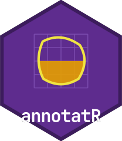

Working with qupflowR: handoffs, control and training data
Source:vignettes/partner-interop.Rmd
partner-interop.Rmd
annotatR and the qupflowR package (a QuPath bridge, analysis and
workflow package) exchange annotations, masks, hyperspectral metadata
and deep-learning datasets through a small, versioned contract. qupflowR
never reaches into annotatR internals, Shiny state, inst/
files or the browser DOM; it uses the public functions below, the files
they write, or the optional local control service. This vignette
describes that contract from the annotatR side.
What this installation supports
caps <- at_interop_capabilities()
caps
#> <at_capabilities> annotatR 0.2.0 for qupflowR
#> I0 supported file interchange (handoff directory)
#> I1 supported public R API
#> I2 planned loopback control service - implemented and tested locally; no qualified qupflowR client run recorded
#> I3 planned embeddable shiny.appobj - at_app() is implemented and tested locally; no qualified qupflowR embedding recorded
#> digest d279f3d2d735190e25c37b8a9d6e5d4ca76ee00854c3fa8984c8f86fa85af500
caps$profiles$I2[c("status", "implemented", "available", "reason")]
#> $status
#> [1] "planned"
#>
#> $implemented
#> [1] TRUE
#>
#> $available
#> [1] TRUE
#>
#> $reason
#> [1] "implemented and tested locally; no qualified qupflowR client run recorded"The profiles are:
| Profile | What it covers | Status rule |
|---|---|---|
| I0 | file interchange: handoff directories, QuPath GeoJSON, masks with legends | supported |
| I1 | public R API (at_* functions) |
supported |
| I2 | loopback control service annotatr-control-v1
|
planned until qualified with a real qupflowR client;
unavailable without httpuv/later |
| I3 | embeddable app object from at_app()
|
planned until qualified; unavailable
without shiny/bslib/shinyjs/htmlwidgets |
A capability is never advertised as supported because it merely
exists. The report carries a digest (SHA-256 of its
canonical JSON) that manifests and handshakes repeat, so a partner can
bind its expectations to exactly this set.
Handoff directories
at_export_qupflowr() writes a new, self-contained
directory of neutral files:
proj <- at_example_project()
dest <- file.path(tempdir(), "qupflowr-handoff")
receipt <- at_export_qupflowr(proj, dest, formats = c("qupath_geojson", "mask_tiff", "manifest"),
overwrite = TRUE)
#> Registered S3 method overwritten by 'stars':
#> method from
#> st_interpolate_aw.stars sf
receipt$files[, c("path", "size_bytes", "format")]
#> # A tibble: 5 × 3
#> path size_bytes format
#> <chr> <dbl> <chr>
#> 1 annotations_qupath.geojson 2228 qupath_geojson
#> 2 image.json 1824 image_json
#> 3 manifest.json 8289 manifest
#> 4 masks/regions_labelled.tif 2936 mask_tiff
#> 5 masks/regions_labelled.tif.legend.json 675 legend_json
receipt$handoff_digest
#> [1] "b3e81f94c263ffc851944efa2cce3695d0fa721a98ba17b72534a1ca08a3935e"-
annotations_qupath.geojsonuses the QuPath 0.4+ dialect with a stable UUID per ROI and annotatR’s ROI id, layer, source and level inproperties.metadata. -
masks/<layer>_labelled.tifholds one integer value per ROI; its.legend.jsonjoins values to ROI ids, labels and colours. -
image.jsonandmanifest.jsonidentify images by content hash and file basename only. No absolute path is used as identity. -
integrity.jsoninventories every other file (path,size_bytes,sha256, sorted by path). The handoff digest is the SHA-256 of its canonical JSON (keys sorted, no whitespace, integer sizes, no trailing newline) — the same rule qupflowR uses for its bundle digest.
Files are written to a hidden staging directory and moved into place
only when complete. An existing destination is replaced only with
overwrite = TRUE, and only if it is itself a handoff
directory.
The manifest
man <- receipt$manifest
man[c("schema", "schema_version", "consumer", "object_kind")]
#> $schema
#> [1] "annotatr-handoff-v1"
#>
#> $schema_version
#> [1] "1.0"
#>
#> $consumer
#> [1] "qupflowR"
#>
#> $object_kind
#> [1] "project"
str(man$coordinate_convention)
#> List of 7
#> $ origin : chr "top_left"
#> $ x_axis : chr "right"
#> $ y_axis : chr "down"
#> $ units : chr "px"
#> $ level_scale : chr "declared"
#> $ pixel_centre : chr "half_integer"
#> $ plane_indexing: chr "zero_based"
man$images[[1]][c("image_id", "source_name", "width", "height", "n_bands", "transform_digest")]
#> $image_id
#> [1] "sha256:3fa00078c93c3a7d"
#>
#> $source_name
#> [1] "example_tissue.png"
#>
#> $width
#> [1] 512
#>
#> $height
#> [1] 512
#>
#> $n_bands
#> [1] 3
#>
#> $transform_digest
#> [1] "9f3c4f1dfe0d1f127c2bd93ea92428bda102adc29cd80fd85cd936144e71c2dc"
man$annotations$annotation_revision
#> [1] "sha256:6b91babfc88f9fa8593075b60d31a11fb82d3fdb8c368c99e0fe76cffc065321"The coordinate convention is explicit: pixel units, origin at the
top-left corner, y increasing downward, planes indexed from
zero, and the pixel coverage rule for masks. QuPath object hierarchy and
native ROI shapes, which annotatR does not model, are reported as
"unknown" or "approximated" (circles and
ellipses are polygons) instead of being invented.
Importing, staging and committing
at_import_qupflowr() reads only the neutral contract. It
verifies the inventory (missing, extra, duplicate, resized, altered and
symlinked files), the manifest schema and its major version, the id join
between manifest and GeoJSON, labels, mask dimensions, integer values
and legend completeness. Any failure is a classified error; nothing is
written and no analysis runs.
report <- at_import_qupflowr(dest, expected_revision = at_annotation_revision(proj))
report$checks
#> # A tibble: 5 × 3
#> check status detail
#> <chr> <chr> <chr>
#> 1 integrity ok 5 files verified
#> 2 manifest_schema ok 1.0
#> 3 annotations:project ok 3 ROIs joined by id
#> 4 masks ok 1 masks: dimensions, integers and legends verified
#> 5 expected_revision ok sha256:6b91babfc88f9fa8593075b60d31a11fb82d3fdb8c3…Changes are applied in two explicit steps. Staging joins ROIs by id and classifies each change; reviewed or locked ROIs and locked layers are never changed automatically but reported as conflicts:
partner <- report$objects$layers$regions
partner <- at_layer_add(partner, at_roi_rect(10, 10, 60, 60, label = "stroma", id = "from-partner"))
patch <- at_stage_qupflowr(proj, partner, expected_revision = at_annotation_revision(proj))
patch$operations
#> # A tibble: 4 × 5
#> op roi_id layer label reason
#> <chr> <chr> <chr> <chr> <chr>
#> 1 unchanged roi_000000001 regions tumour ""
#> 2 unchanged roi_000000002 regions necrosis ""
#> 3 unchanged roi_000000003 regions stroma ""
#> 4 create from-partner regions stroma ""Committing is idempotent: the same key replays the original receipt,
a reused key for a different patch is refused. When the patch targets a
project file, the file’s revision is checked again immediately before it
is replaced, and replacing an existing file requires
overwrite = TRUE.
receipt <- at_commit_qupflowr(patch, idempotency_key = "vignette-commit")
receipt$new_revision
#> [1] "sha256:8850adbda3b979cd3e45d9541c93c712404adf3a8eb7633e659f1a7bb69fbde5"
at_commit_qupflowr(patch, idempotency_key = "vignette-commit")$replayed
#> [1] TRUEHyperspectral metadata
Spectral images keep the format-independent tile contract
[y, x, band]. Metadata travels with them explicitly:
cube <- at_example_image("cube")
head(at_bands(cube), 3)
#> # A tibble: 3 × 7
#> index name wavelength unit fwhm order wavelength_status
#> <int> <chr> <dbl> <chr> <dbl> <int> <chr>
#> 1 1 Band 1 450 nm NA 1 ok
#> 2 2 Band 2 462. nm NA 2 ok
#> 3 3 Band 3 473. nm NA 3 ok
at_hsi_meta(cube)[c("image_kind", "value_unit", "interleave", "byte_order", "header_bytes",
"calibration_digest", "window_read")]
#> $image_kind
#> [1] "spectral"
#>
#> $value_unit
#> [1] "unknown"
#>
#> $interleave
#> [1] "bsq"
#>
#> $byte_order
#> [1] "little"
#>
#> $header_bytes
#> [1] 0
#>
#> $calibration_digest
#> [1] NA
#>
#> $window_read
#> [1] TRUERaw values, reflectance, radiance, intensity and absorbance are never
mixed: at_convert_values() implements the named conversions
and refuses to guess a missing calibration. ENVI and TIVITA cubes are
read window by window, so opening, printing or displaying a cube does
not load it; at_read_stats() reports the bytes read. A
TIVITA *_SpecCube.dat is decoded only through a declared
at_tivita_profile() or a
<cube>.tivita.json sidecar. Cubert .cu3s
files need cuvis.r and the CUVIS SDK; without them the
backend reports itself unavailable and an SDK-written ENVI export is the
portable fallback. Display products from at_band_view()
(ratios, normalised differences, band means) carry their parent digest
and band list and are never used as analysis input.
Deep-learning training datasets
sess <- at_example_session(3)
for (i in seq_len(3)) sess$projects[[i]] <- at_example_project()
ds <- at_training_export(sess, file.path(tempdir(), "training-dataset"), tile_size = 128,
mask_type = "labelled", seed = 11, overwrite = TRUE)
ds$manifest$split_policy$algorithm
#> [1] "groups ranked by sha256('<seed>:<group_id>'), cut by cumulative fractions"
ds$manifest$counts[c("tiles", "tiles_by_split", "excluded")]
#> $tiles
#> [1] 48
#>
#> $tiles_by_split
#> $tiles_by_split$train
#> [1] 48
#>
#> $tiles_by_split$validation
#> [1] 0
#>
#> $tiles_by_split$test
#> [1] 0
#>
#>
#> $excluded
#> $excluded$partial
#> [1] 0
#>
#> $excluded$empty
#> [1] 0
ds$checks
#> # A tibble: 6 × 3
#> check status detail
#> <chr> <chr> <chr>
#> 1 integrity ok inventory verified
#> 2 split_leakage ok 1 groups, 3 images, no shared source across splits
#> 3 mask_dimensions ok 0 of 48 tiles with wrong or unreadable dimensions
#> 4 label_range ok 0 of 48 tiles with codes outside the legend
#> 5 overlap ok 0 ambiguous (overlapping) pixels in included tiles
#> 6 mask_roi_roundtrip ok 0 of 20 sampled tiles differ after mask -> ROI -> m…Splits are assigned per group — per image by default, or per
sample_id or subject_id supplied in
groups — so tiles of one source never occur in two splits.
The manifest records tile size, overlap, level, pixel origin, coverage
rule, class legend (background 0), band list with
wavelengths and FWHM, value unit, calibration and transform digests,
annotation revisions and review status counts.
at_training_check() re-verifies the inventory, split
leakage, mask dimensions, label range and a mask-to-ROI round trip.
Model predictions come back as staged annotations. They must match the image dimensions and use only codes from the label map; reviewed annotations are never overwritten:
pred <- matrix(0L, 512, 512)
pred[20:80, 30:120] <- 1L
staged <- at_training_import(proj, pred, label_map = c(tumour = 1L),
model = list(name = "example-unet", version = "0.1",
sha256 = strrep("0", 64)))
staged$summary
#> $create
#> [1] 1
#>
#> $update
#> [1] 0
#>
#> $unchanged
#> [1] 0
#>
#> $delete
#> [1] 0
#>
#> $conflict
#> [1] 0Training itself remains an external, optional workflow.
The control service
A partner process can drive a running app through the loopback
service. It is off unless started, binds only to 127.0.0.1,
authenticates with a random bearer token that expires, rejects
browser-origin requests and oversized bodies, resolves file references
only below its root, and offers no endpoint that evaluates R, shell or
Python code.
handle <- at_control_start(at_example_session(2), serve = FALSE)
state <- at_control_state(handle)
state$state_revision
#> [1] "0"
at_control_command(handle, list(operation = "context.goto", payload = list(queue_index = 2),
expected_revision = state$state_revision))$entry_id
#> [1] "entry-0002"
vapply(at_control_events(handle)$events, `[[`, character(1), "type")
#> [1] "service.started" "image.changed"
at_control_stop(handle)In a real integration the app runs in its own process:
handle <- at_control_start(session, token_file = "/run/user/1000/annotatr.token")
shiny::runApp(at_app(control = handle))
# ... in the partner process:
remote <- at_control_connect(manifest_path, "/run/user/1000/annotatr.token")Every mutation carries a request_id, the
expected_revision it is based on, an
idempotency_key and the SHA-256 of its canonical payload. A
stale revision is a conflict; a lost response is resolved with
at_control_request_status(), and re-sending with the same
key never applies a command twice. Events are read with a cursor; a
cursor from another instance or older than the retained buffer yields
resync_required = TRUE.
The JSON Schemas for all documents ship with the package:
basename(list.files(system.file("schema", package = "annotatR"), recursive = TRUE))
#> [1] "command.schema.json" "event.schema.json"
#> [3] "events-page.schema.json" "handshake.schema.json"
#> [5] "health.schema.json" "request-record.schema.json"
#> [7] "response.schema.json" "state.schema.json"
#> [9] "integrity.schema.json" "manifest.schema.json"
#> [11] "training-manifest.schema.json" "tivita-profile.schema.json"Versions and migration
Schema versions are independent of the package version. Readers
reject an unknown major version and keep unknown optional data only
under extensions. annotatR 0.2.0 introduces
annotatr-handoff-v1, annotatr-control-v1,
annotatr-training-v1 and annotatr-hsi-v1 (all
1.0). Existing 0.1 files remain readable: legacy QuPath
GeoJSON (object_type, colorRGB) is imported,
and at_write_qupath(dialect = "legacy") still writes
it.